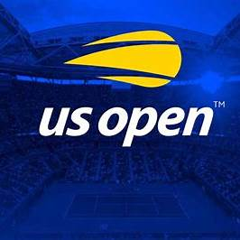
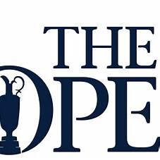
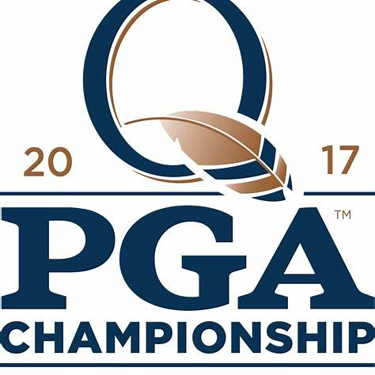

Masters Tournament
Primul major al anului are loc în luna aprilie, la celebrul Augusta National Golf Club din Georgia, SUA. Acest turneu este cunoscut pentru tradițiile sale unice, în special pentru jacheta verde oferită câștigătorului. Masters-ul oferă un premiu de aproximativ 2,7 milioane de dolari, iar câștigarea sa este un simbol al excelenței în golf. În 2024, trofeul i-a revenit lui Scottie Scheffler.
Turneele Majore (Majors)


U.S. Open
Unul dintre cele mai dificile turnee din circuit, U.S. Open se joacă pe terenuri diferite din Statele Unite în fiecare an, fiind renumit pentru setup-ul extrem de provocator care testează la maximum abilitățile jucătorilor. Premiul pentru câștigător este de aproximativ 3,15 milioane de dolari, iar învingătorul trebuie să facă față unor condiții de joc dure și unei competiții intense.
Unul dintre cele mai dificile turnee din circuit, U.S. Open se joacă pe terenuri diferite din Statele Unite în fiecare an, fiind renumit pentru setup-ul extrem de provocator care testează la maximum abilitățile jucătorilor. Premiul pentru câștigător este de aproximativ 3,15 milioane de dolari, iar învingătorul trebuie să facă față unor condiții de joc dure și unei competiții intense.
The Open Championship (British Open)
Cel mai vechi turneu de golf din lume, cunoscut simplu ca The Open, se joacă pe terenuri de tip links din Regatul Unit, expuse la condiții meteorologice imprevizibile. Acest turneu, disputat din 1860, oferă un premiu de aproximativ 2,5 milioane de dolari și este văzut drept testul suprem al versatilității unui jucător. În 2024, titlul i-a revenit lui Xander Schauffele.

Cel mai vechi turneu de golf din lume, cunoscut simplu ca The Open, se joacă pe terenuri de tip links din Regatul Unit, expuse la condiții meteorologice imprevizibile. Acest turneu, disputat din 1860, oferă un premiu de aproximativ 2,5 milioane de dolari și este văzut drept testul suprem al versatilității unui jucător. În 2024, titlul i-a revenit lui Xander Schauffele.

PGA Championship
Ultimul major al sezonului este PGA Championship, un turneu care reunește unii dintre cei mai talentați jucători din lume. Se joacă pe terenuri variate din SUA, oferind un fond de premii generos, cu 3 milioane de dolari pentru câștigător. Pe lângă jucătorii de top, turneul oferă și profesioniștilor cluburilor locale șansa de a concura împotriva elitelor. În 2024, Xander Schauffele a reușit să își adauge acest trofeu în palmares.
Ultimul major al sezonului este PGA Championship, un turneu care reunește unii dintre cei mai talentați jucători din lume. Se joacă pe terenuri variate din SUA, oferind un fond de premii generos, cu 3 milioane de dolari pentru câștigător. Pe lângă jucătorii de top, turneul oferă și profesioniștilor cluburilor locale șansa de a concura împotriva elitelor. În 2024, Xander Schauffele a reușit să își adauge acest trofeu în palmares.